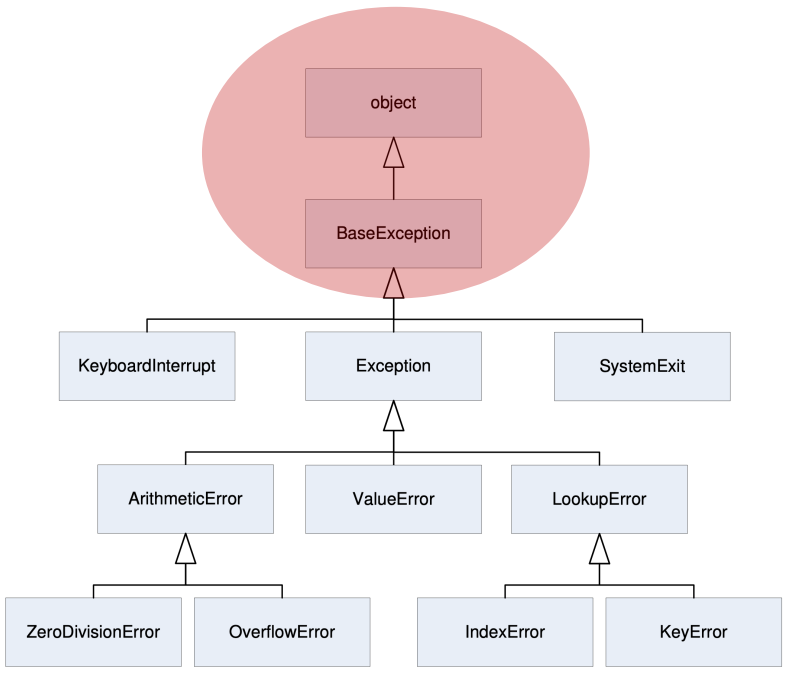

try:
a = int(input("tell me one number"))
b = int(input("tell me another number"))
print(a/b)
except:
print("scem, non si può fà")scem, non si può fàTipi di eccezioni che abbiamo incontrato e che incontriamo comunemente alla prime armi sono:
IndexErrorNameErrorTypeErrorSyntaxErrorCosa accade quando una funzione esegue del codice che produce codizioni non attese?
Viene sollevata un’eccezione (exception).
Le eccezioni sono anche esse degli oggetti che ereditano da un unica classe padre, dopo Object, BaseException.

Il codice Python può fornire handlers per le eccezioni:
try:
a = int(input("tell me one number"))
b = int(input("tell me another number"))
print(a/b)
except:
print("scem, non si può fà")scem, non si può fàLe eccezioni sono:
tryexcept e l’esecuzione continua nel body dell’istruzione exceptÈ raccomandato avere separate le clausole except per gestire un tipo particolare di eccezione.
I blocchi except devono essere posizionati dal più specifico al più generico, in base alla gerarchia delle eccezioni.
try:
a = int(input("Tell me one number: "))
b = int(input("Tell me another number: "))
print("a/b = ", a/b)
print("a+b = ", a+b)
except ValueError:
print("Could not convert to a number")
except ZeroDivisionError:
print("Can't divide by zero")
except:
print("Something went very wrong")Can't divide by zeroelse
try associato completa senza interruzionifinally
try,else e except, anche se si sollevino altri errori o si esegue un break,continue o return.throw in Java)raise Exception("descriptive string)raiseUsato per sollevare un’eccezione quando non siamo capaci di fornire un risultato coerente con la specifica di una funzione.
raise ValueError("Something is wrong")--------------------------------------------------------------------------- ValueError Traceback (most recent call last) Cell In[11], line 1 ----> 1 raise ValueError("Something is wrong") ValueError: Something is wrong
Questo è il metodo corretto quando non siamo capaci di fornire un risultato coerente con la specifica della funzione.
Deve essere utilizzato al posto di ritornare un “valore speciale” che identifica un errore nell’esecuzione del codice.
def get_ratios(L1, L2):
""" Assumes: L1 and L2 are lists of equal length of numbers
Returns: a list containing L1[i]/L2[i] """
ratios = []
for index in range(len(L1)):
try:
ratios.append(L1[index]/L2[index])
except ZeroDivisionError:
ratios.append(float('nan')) #nan = not a number
except:
raise ValueError('get_ratios called with bad arg')
return ratios
l1 = [1,0,1]
l2 = [2,1,0]
get_ratios(l1,l2)
get_ratios("ciao","mondo")[0.5, 0.0, nan]Assumiamo di avere una lista che descrive uno studente e voti presi degli esami
E vogliamo creare una nuova lista con nome, cognome, voti e media
test_grades = [[['peter', 'parker'], [10.0, 5.0, 85.0]],
[['bruce', 'wayne'], [10.0, 8.0, 74.0]],
[['captain', 'america'], [8.0,10.0,96.0]],
[['deadpool'], []]][[['peter', 'parker'], [10.0, 5.0, 85.0]], [['bruce', 'wayne'], [10.0, 8.0, 74.0]], [['captain', 'america'], [8.0, 10.0, 96.0]], [['deadpool'], []]]In questo caso se uno studente ha zero voti dovremmo ottenere un errore e gestirlo perché ad un certo punto avremo:
sum(grades)/len(grades), ma len(grades) == 0\(\rightarrow\)True
# ritorna le statistiche per soggetto
def get_stats(class_list):
new_stats = []
for elt in class_list:
new_stats.append([elt[0], elt[1], avg(elt[1])])
return new_stats
# calcola la media dei punteggi
def avg(grades):
return sum(grades)/len(grades)Abbiamo principalmente due modalità per la gestione delle eccezioni:
Vediamo prima il caso di gestione dell’eccezione diretta:
def avg(grades):
try:
return sum(grades)/len(grades)
except ZeroDivisionError:
print("warning: no grades data")
#return 0.0 # altrimenti ritornerebbe None
print(get_stats(test_grades))warning: no grades data
[[['peter', 'parker'], [10.0, 5.0, 85.0], 33.333333333333336], [['bruce', 'wayne'], [10.0, 8.0, 74.0], 30.666666666666668], [['captain', 'america'], [8.0, 10.0, 96.0], 38.0], [['deadpool'], [], None]]Invece se utilizzassimo una gestione dell’eccezione indiretta avremo:
def avg(grades):
try:
return sum(grades)/len(grades)
except ZeroDivisionError as e:
raise e
print(get_stats(test_grades))--------------------------------------------------------------------------- ZeroDivisionError Traceback (most recent call last) Cell In[7], line 6 4 except ZeroDivisionError as e: 5 raise e ----> 6 print(get_stats(test_grades)) Cell In[3], line 5, in get_stats(class_list) 3 new_stats = [] 4 for elt in class_list: ----> 5 new_stats.append([elt[0], elt[1], avg(elt[1])]) 6 return new_stats Cell In[7], line 5, in avg(grades) 3 return sum(grades)/len(grades) 4 except ZeroDivisionError as e: ----> 5 raise e Cell In[7], line 3, in avg(grades) 1 def avg(grades): 2 try: ----> 3 return sum(grades)/len(grades) 4 except ZeroDivisionError as e: 5 raise e ZeroDivisionError: division by zero
In questa modalità decidiamo di risollevare l’eccezione intercettata tramite il costrutto as.
Delegando di fatto la gestione dell’eccezione al chiamante.
throwsIn Python non esiste la direttiva throws, che permetteva in Java di specificare se un metodo potesse sollevare o meno una certa eccezione.
In Python è possibile specificare questo solo nella documentazione (docstrings).
L’alternativa sarebbe quella di utilizzare dei decorator per annotare il codice specificando il comportamento per specificare l’eccezione.
Vogliamo essere sicuri che certe assunzioni su una particolare condizione siano come attese.
Se una certa condizione non risulta vera, Python consente, attraverso assert, di sollevare un’eccezione di tipo AssertionError.
NOTA BENE: nel linguaggio
C/C++/Java,asserttermina in ogni caso il processo correnteIn Python, se il programmatore tenta di gestire l’eccezione
AssertionErroresplicitamente, il processo corrente non terminerà automaticamente!
L’utilizzo di asserzioni è un buon esempio di defensive programming.
def avg(grades):
assert len(grades) != 0, 'no grades data'
return sum(grades)/len(grades)
print(get_stats(test_grades))--------------------------------------------------------------------------- AssertionError Traceback (most recent call last) Cell In[8], line 5 2 assert len(grades) != 0, 'no grades data' 3 return sum(grades)/len(grades) ----> 5 print(get_stats(test_grades)) Cell In[3], line 5, in get_stats(class_list) 3 new_stats = [] 4 for elt in class_list: ----> 5 new_stats.append([elt[0], elt[1], avg(elt[1])]) 6 return new_stats Cell In[8], line 2, in avg(grades) 1 def avg(grades): ----> 2 assert len(grades) != 0, 'no grades data' 3 return sum(grades)/len(grades) AssertionError: no grades data